3.3.8 Data Compression
Table of Contents
1 Data Compression
Learn It
- Files, especially graphic and audio files, can become very
large. Here are some intersting facts:
- On Facebook more than
350 million images are uploaded each day. OnSnapchat 8,796 imagesare uploadedper second. It has been estimated thatover 3.2 billion imagesareuploadedto social media siteseach day! - Every day millions of audio and video files are being downloaded.
- On Facebook more than
- When data is transmitted across the Internet, it will go through many different physical links between routers.
- The connection from a computer or a LAN into the Internet is likely to be the slowest part of this route, as you probably know from experience.
- At home you may have quite a slow network connection and it may take a while for web pages to load.
- One way of speeding the rate at which files can be transmitted
across the Internet is to
compressthem to make them smaller.Smallerfiles takeless time to transmitover a network. - Understanding how compression affects files is important, as the type of compression selected will affect how the image looks or the audio track sounds. The final use of the file will dictate how much you can compress the files and still have a file that is uasable.
- To summarise, compression is used in order to:
- Reduce the amount of storage needed on a computer to save files.
- Allow large files to be transmitted as an email attachment; many email servers limit the size of a file that can be sent and compression can reduce the file size to allow users to send it.
- Allow a file to be transmitted in less time, due to the smaller file size.
- It reduces congestion on the Internet through smaller files.
- It makes audio and video files suitable for streaming.
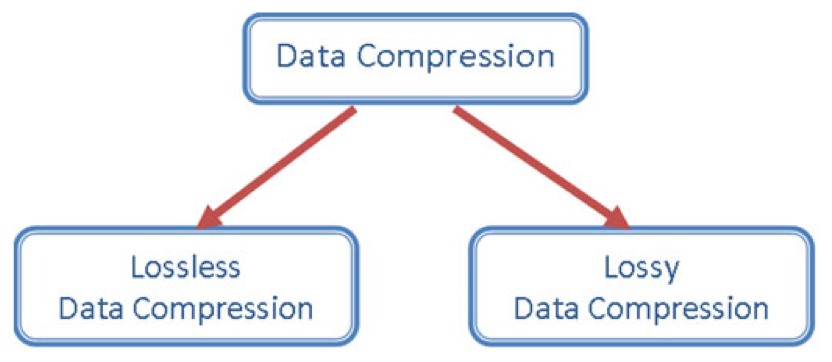
2 Types of Compression
Learn It
Lossy Compression
- Is a data encoding method where files are compressed by removing some of the detail. For example, photographs can be stored using fewer colours so fewer bits are needed per pixel.
- This type of compression is used to compress images, audio and video files.
- That is why it
cannotbe used fortext files or program files- A book with many missing words would be unreadable! - But lossy compression can be used for graphic and audio files as they contain much data that can be discarded.
- The most commonly used compression technique for graphic files was
developed by the
Joint Photographic Experts Groupand producesJPEGfiles with the extension.jpg. - Here are two photographs to show the differences:
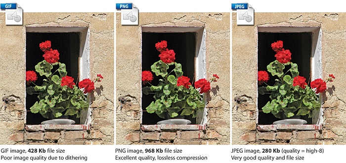
Lossless Compression
- With a lossless data encoding method, a file is compressed
but no data is lostand the file can be decompressed with all of its information intact. - For example, bank records must keep all of the data; you cannot transmit a bank statment and miss out a few zeros because they don't matter too much!
- It could be used to compress data files, for example by
Zippingthem using a utility program such asWinZip, before attaching them to an email.
The size of an image file depends on the colour depth and dimensions. The size of an audio file depends on the sample rate and bit depth. The size of an image file and an audio file can be very large.
Try It
Finish completing the following table showing different file types and file extensions used for different file formats.
| Type | File Suffix | Compression Type | Explanation |
|---|---|---|---|
| Bitmap | .bmp | - | Uncompressed still image file |
| JPEG | Good for photos, colour depth=24bits, RGB, 16.7 million colours | ||
| Graphic Interchange Format | Lossless | ||
| MP3 | .mp3 | Lossy |
3 Run Length Encoding (RLE)
Learn It
Run Length Encoding (RLE)is a simple form of lossless data compression which works by reducing the physical size of a sequence of
data having the same value and are stored using requency/data pairs.
- This repeating string, called a
run, is encoded intotwo bytes. - The first byte represents the number of characters in the run and the second gives the character.
- For example, let's look at the following string:
aaabbbbbbccccccccc- This string length is
18 bytes. - Using run length encoding, this could be compressed to:
3a6b9c- This string has been reduced to
6 bytesusing RLE.
- RLE provides very good compression ratios where there are long runs of one particular value like the following 1-bit black and white image:
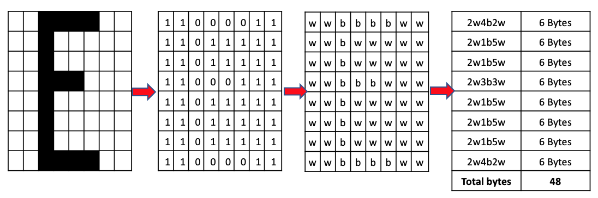
- When represented by a letter, the size of the file is 64 bytes: 8 bytes per line.
- Using Run Length Encoding will reduce the file size of this
one characterfrom64 bytesto48 bytes.
4 Huffman Coding
Learn It
Huffman coding, also known asHuffman EncodingorHuffman Compression. Is an algorithm for lossless compression based on the frequency of the characters or symbols in the file.- It ensures that the more common characters have fewer bits to represent them than the less common characters that need more bits to identify them.
- Therefore the overall size of the file is reduced.
- It is therefore called a
variable-length coding systembecause the codes for different characters have different lengths. - Huffman coding uses a structure called a
Binary Tree, which consists of a root node and a number of nodes and branches as shown in the diagram below:
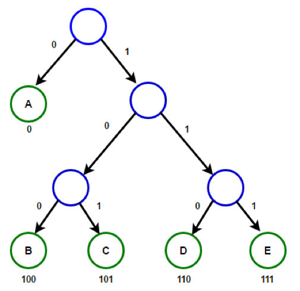
Try It
Constructing a Huffman Tree
- For this example we will construct a Huffman Tree for the sentence:
BOURNE_GRAMMAR. - Step 1: Draw a table showing the frequency of each character, including spaces. For example, there is one "B", one "E" and three "R"s in the sentence.
| Character | B | E | G | N | O | U | SPACE | A | M | R |
|---|---|---|---|---|---|---|---|---|---|---|
| Frequency | 1 | 1 | 1 | 1 | 1 | 1 | 1 | 2 | 2 | 3 |
- (Check that the frequencies add up to
14 charactersincluding spaces as in the given sentence.) Ensure that you write the frequencies in ascending order as shown above. Currently the total bit value for the uncompressed sentence is14 chars x 7-bits = 98 bits.
- Step 1: Combine pairs of frequencies, always choosing the pair
that gives the smallest combined frequency. For example,
BandEeach have a frequency of1. SoBandEhave a combined frequency of2. - Create a node containing the combined frequencies of the first two
pairs
(2)and a branch for each ofBandE.
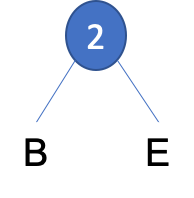
- Step 2: The next smallest frequency pair is formed by pairing the
letters are
GandNeach also have a frequency of1. These can then be grouped to form anew nodewith a value of4.
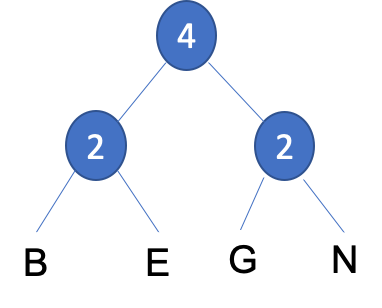
- Step 3: We have a choice when placing
UandSPACE, it can be paired with the previous subtree or a new subtree. To keep the tree balanced we will create a new subtree with a frequency value of2.
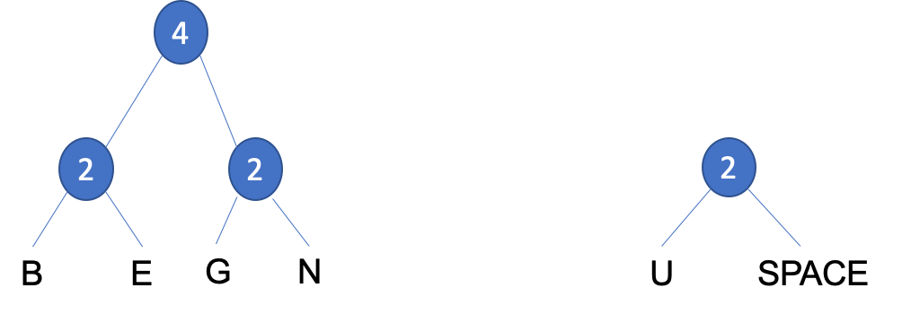
- Step 4: The next two frequency pairs are
OandA, having a frequency of1and2. These can then be grouped to form asubtreewith a value of3, which can then be grouped together with the previous subtree to form anew nodewith a value of5.
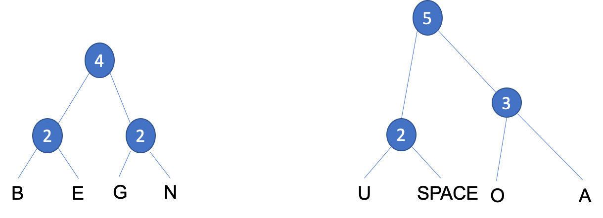
- Step 5: We have another choice when placing
Mwhich has a frequency value of2, it can be paired with either of the two subtrees or a new node. To keep the tree balanced we will create anew nodewith a new frequency value of7.
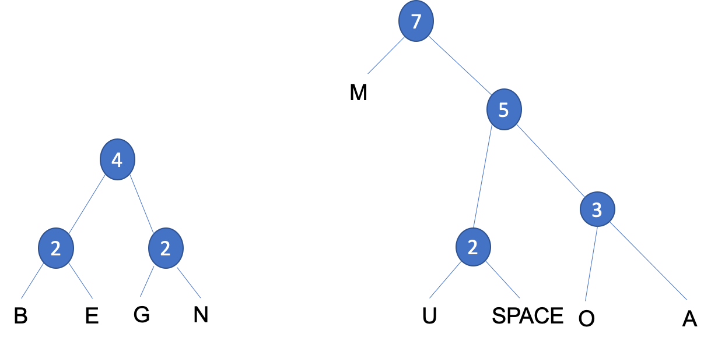
- Step 6: We have another choice when placing
Rwhich has a frequency value of3, it can be paired with either of the two subtrees or a new node. To keep the tree balanced we will create anew nodewith a new frequency value of7.
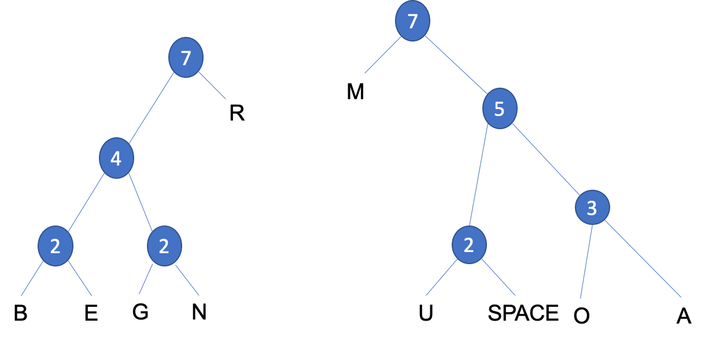
- Step 7: We need to add a
root nodeto join the twosubtreestogether.

- Step 8: The tree is now complete. You can add the labels below to
each branch, with the left branches labelled
0and the right branches labelled1.
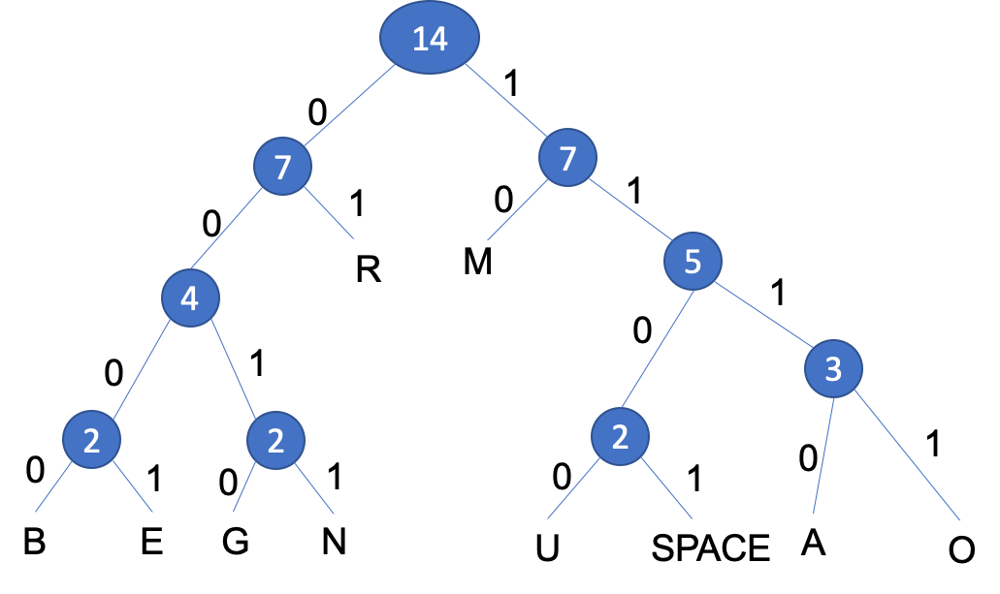
Using a Huffman Tree, the coding for each character is derived from the path taken from the root node to the character. Branching left at a node is coded 0, branching right is coded 1. Notice that the characters that occur most frequently are nearer the top and therefore require fewer characters to encode them. Therefore the character 'R' would be represented by the bit pattern 01 because from the top of the tree, you go left, then right to reach 'R'. The encoding for 'G' would be 0010 and for 'B', 0000. The total number of bits needed to represent the sentence 'BOURNE GRAMMAR' would be 14 chars x 7-bits = 98 bits using 7-bit ASCII. Through using Huffman Encoding the number of bits required would be 46 bits, representing a saving of 52 bits in the compressed format, with a 53% reduction in size.
- We can reassemble our sentence with the Huffman Encoded binary
values below each character, counting the number of bits gives us
46 bitscompared to the original98 bitsthat's a reduction of53%.
| Sentence | B | O | U | R | N | E | SPACE | G | R | A | M | M | A | R |
|---|---|---|---|---|---|---|---|---|---|---|---|---|---|---|
| Binary | 0000 | 1110 | 1100 | 01 | 0011 | 0001 | 1101 | 0010 | 01 | 1111 | 10 | 10 | 1111 | 01 |
Huffman Coding Explained
- The following video explains how a Huffman Tree works:
Badge It
Silver: For the following 1-bit graphic, calculate:
- (a) The result of applying a run length encoding algorithm.
- (b) The original file size and size after appplying run length encoding.

Badge It
Gold: The following Huffman Tree represents the text;'HELEN FEEDS THE EELS' 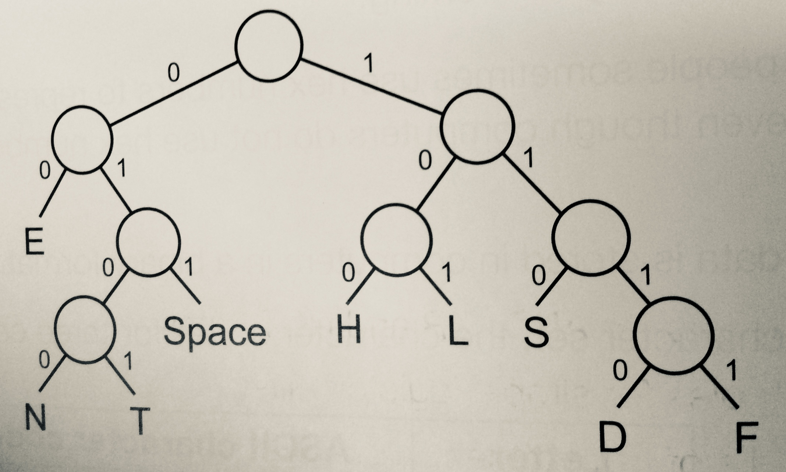
- (a) Complete the table showing the Huffman coding for S, T and SPACE.
| Character | Huffman Coding |
|---|---|
| S | |
| T | |
| SPACE |
- (b) What does the following code represent?
1101000011111100101101
Badge It
- Platinum: Using the Huffman code sentence 'HELEN FEEDS THE EELS' which can be stored in 57 bits.
- (a) Calculate the number of bits that would be needed to store the sentence in ASCII?
- A frequency table for characters in a document is shown below:
| A | B | C | D | E |
|---|---|---|---|---|
| 20 | 15 | 9 | 8 | 5 |
- (b) Create a Huffman Tree for this set of characters.